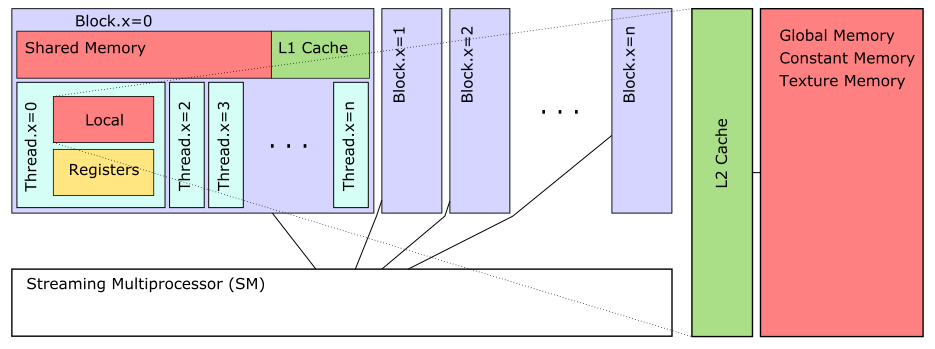

GPU memory¶
This notebook contains notes on the GPU memory layout, processing, and some of the lower-level access to the CUDA API which interfaces with those aspects, as well as the specific CUDA.jl bindings.
I watched a series of videos last night, which explain how CUDA functions
CUDA Tutorials by Creel
Intro to Cuda by Josh Holloway
Memory model¶
In short, the GPU memory and architecture looks something like this:

Computation¶
The principle units of GPU processing are threads, which in CUDA are arranged into blocks. GPUs use this block-based processing design so that the same code can run irrespective of the GPU model itself, with more powerful GPUs churning through more blocks at a time.
The GPU has a number of streaming multiprocessors (SM), each consisting of a number of streaming processors (SP), which are scalar lanes, running a single thread at a time. A SM schedules instructions to the SP as it executes a block, through the warp scheduler.
A block is exectuted in warps, where a single warp is usually defined as the execution of 32 simultaneous threads (related to memory access transaction specifics, see this SO answer).
A single block can hold up to 1024 threads, and there is no practical limit on the number of blocks you can define.
An overall scheduler on the GPU will distribute blocks to the SMs, which in turn will execute a number of warps per clock cycle until all of the blocks have been completed.
In CUDA, when we launch a processing kernel (a routine/algorithm/function) on the GPU, we can specifiy the block layout, and within those blocks, the number of threads.
The block layout is known as a grid.
There’s elements of tradeoffs between number of threads and the shared memory in a block, which is why you may want to limit these things.
Note, there are tools to help you optimize this: for example, in CUDA.jl:
CUDA.launch_configuration()
Thread topology¶
When launching a kernel on a GPU, you provide a topology specifying the dimensionality of your blocks and grids. For example, you could run 27 threads in a 3-dimensional block (3x3x3), and launch 25 of those blocks in a two dimensional grid (5x5).
In order to help each thread uniquely identify itself (and consequently the data it should compute over) CUDA uses threadIdx and blockIdx to store topology information.
When block and grid are both 1-dimensional, we can use the formula
idx = threadIdx().x + blockDim().x * (blockIdx().x - 1)
to determine a unique identifier for our thread.
Memory¶
Each block has shared memory, which is stored on-chip of the SM. This memory is typically rather small (10s of kilobytes), and is used for intercommunication between threads. The RW operations are consequently very fast by proximity. Shared memory is accessed through an L1 cache, so write operations to shared memory must be synchronised.
Each thread has register memory (unlike CPUs, there are many thousand GPU registers) for storing immediate data, and any spillover from register memory is stored in the thread’s local memory. Now despite the name, the local memory is off-chip, stored in the GPUs equivalent of DRAM, and so RW operations are slow. The local memory is owned and exclussively accessible by the running thread, as, of course, as the registers.
Then there is the global memory, which is host not only to each thread’s local memory, but itself represents memory that each thread can read and write to, albeit slow by distance, and not write-threadsafe.
The global memory also houses the constant memory (sections of read-only written by the CPU and locked when a kernel launches), and the texture memory, which is special interpolated read-only memory.
On modern GPUs, the global memory is accessed through an L2 cache.
Memory accesses are often combined between threads; thus reaching for e.g. global memory is best done by many threads at approximately the same time, so that the hardware can conglomerate the action.
Device introspection¶
The CUDA library provides different tools for obtaining information on GPU devices, such as the command line nvidia-smi for a whole range of information. However CUDA.jl provides bindings for much of what we would need:
using CUDA
CUDA.versioninfo()
CUDA toolkit 11.3.1, artifact installation
CUDA driver 11.2.0
NVIDIA driver 460.73.1
Libraries:
- CUBLAS: 11.5.1
- CURAND: 10.2.4
- CUFFT: 10.4.2
- CUSOLVER: 11.1.2
- CUSPARSE: 11.6.0
- CUPTI: 14.0.0
- NVML: 11.0.0+460.73.1
- CUDNN: 8.20.0 (for CUDA 11.3.0)
Downloading artifact: CUTENSOR
- CUTENSOR: 1.3.0 (for CUDA 11.2.0)
Toolchain:
- Julia: 1.6.2
- LLVM: 11.0.1
- PTX ISA support: 3.2, 4.0, 4.1, 4.2, 4.3, 5.0, 6.0, 6.1, 6.3, 6.4, 6.5, 7.0
- Device capability support: sm_35, sm_37, sm_50, sm_52, sm_53, sm_60, sm_61, sm_62, sm_70, sm_72, sm_75, sm_80
1 device:
0: GeForce GTX 980 (sm_52, 3.377 GiB / 3.946 GiB available)
dev = collect(CUDA.devices())[1]
CuDevice(0): GeForce GTX 980
The compute capability:
CUDA.capability(dev)
v"5.2.0"
Numbers of threas per warp:
CUDA.warpsize(dev)
32
Number of threads per block:
CUDA.attribute(dev, CUDA.CU_DEVICE_ATTRIBUTE_MAX_THREADS_PER_BLOCK)
1024
The amount of shared memory per block:
CUDA.attribute(dev, CUDA.CU_DEVICE_ATTRIBUTE_MAX_SHARED_MEMORY_PER_BLOCK)
49152
which is about 46 KB.
Total constant memory:
CUDA.attribute(dev, CUDA.CU_DEVICE_ATTRIBUTE_TOTAL_CONSTANT_MEMORY)
65536
Maximum number of registers per block:
CUDA.attribute(dev, CUDA.CU_DEVICE_ATTRIBUTE_MAX_REGISTERS_PER_BLOCK)
65536
CUDA.attribute(dev, CUDA.CU_DEVICE_ATTRIBUTE_REGISTERS_PER_BLOCK)
65536
Multiprocessor count:
CUDA.attribute(dev, CUDA.CU_DEVICE_ATTRIBUTE_MULTIPROCESSOR_COUNT)
16